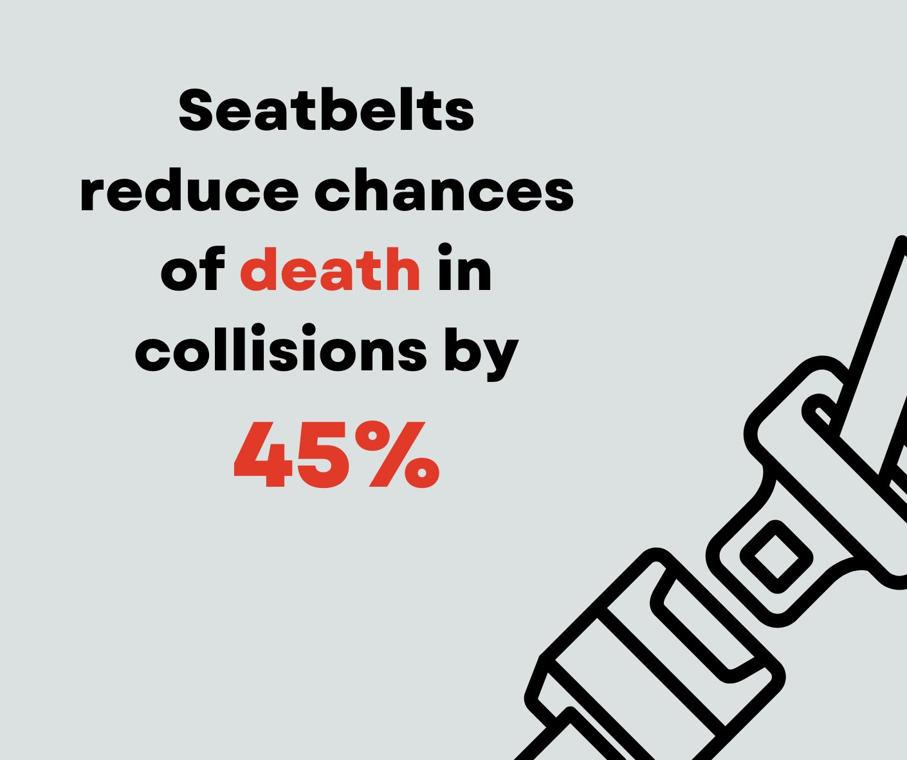
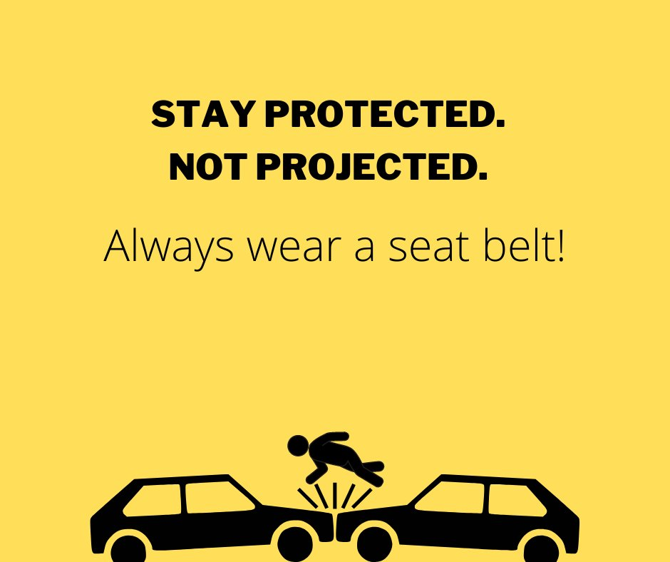
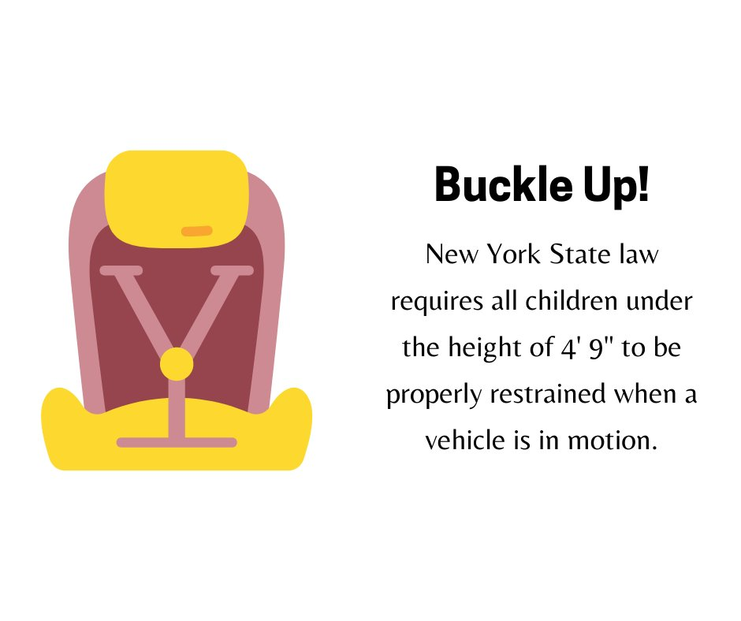

New York Governor Andrew Cuomo signed into law S.4336/A.6163. This means that as of November 2020, it is now mandatory that the vehicle's driver and all passengers wear a seat belt. All child passengers, depending on their age, weight and size, must be buckled properly in an appropriate booster seat, safety seat, or using a seat belt.
New York is a primary enforcement state. This means that an officer may stop and write you a ticket if you, or any passengers in your vehicle, are not wearing a seat belt.
To be clear: if you are in a vehicle, either as the driver or a passenger, you must have a seat belt on!
By law, all vehicles that have been made after 1972 must come with seat belts equipped. Driving a vehicle without functioning seat belts is against the law and can result in a ticket. You must ensure that the seat belts in your vehicle are in good working condition.
Seat belts save lives! If you think that they're uncomfortable or you don't need them, take a look at the following fact:
Every state, with the exception of New Hampshire, requires the driver and the front-seat passenger to wear a seat belt while the vehicle is moving. Failing to do so can result in a ticket with hefty fines. New Hampshire is the only state that does not require drivers or passengers over the age of 18 to wear seat belts.
Ideally, your seat belt should fit comfortably. There are two types of seat belts:
Both lap belts and shoulder belts are designed to keep the occupants of the vehicle safe in the event of a crash by securing the person in the seat and preventing them from moving forward or to the side. However, shoulder belts are generally considered to be more effective than lap belts because they help to distribute the force of the crash over a larger area of the body and help to reduce the risk of injuries to the chest and head.

There are a number of myths about seat belts. In practice, they're only fallacies that can severely increase the chance of being hurt or killed in the case of a collision. Read examples of these myths below.
Studies show that most accidents happen within 7 miles of home. Many accidents result in serious injuries because someone didn't use their seat belt.
Seat belts are designed to be comfortable and if you're feeling constricted or uncomfortable, chances are that you're using the seat belt in an improper way. Adjust your seat belt so that it is comfortable for you.
It takes less than a few seconds to take off your seat belt using the release on its lock. After it has been released, seatbelts retract by themselves with minimum effort. However, not wearing a seat belt and ending up in a collision can cause you to face severe injury or may render you unconscious, both of which can be far more devastating in the case of a fire or an incident where your vehicle is submerged in water.
In reality, being thrown out of the vehicle is more dangerous. If a person is thrown from a vehicle during a crash, they are at a much higher risk of serious injury or death. They are no longer protected by the safety features of the vehicle, such as the airbags and crumple zones, and can be hit by other vehicles, obstacles or the ground with great force.
Until a child has grown to a height of 4' 9", seat belts are not appropriate. As a result, they must be in a child seat whenever they are in a moving vehicle.
It is important to use a proper child seat for several reasons:
It is important to ensure that all child restraint seats that you are using must be compliant with U.S Department of Transportation Safety standards. Please refer to the manufacturer's instructions and guidelines when installing and using restraint seats.
Always remember that New York Law requires all children to be properly buckled up when your vehicle is in motion.
A proper child seat is a crucial safety measure for children when traveling in a vehicle. It helps to protect them from injuries, is tailored to their size and weight, and is required by law in many places.

Airbags are safety devices found in vehicles that are designed to inflate rapidly during a collision to provide cushioning for the occupants. They are typically located in the steering wheel, dashboard, and door pillars of a vehicle.
Airbags work by using sensors to detect the force of a collision and then rapidly inflating to create a cushion between the occupants and the vehicle's interior. This helps to reduce the force of the impact and prevent injuries to the head, chest, and other vital areas of the body.
Airbags are important in vehicles for several reasons:
Airbags are an important safety feature in vehicles that provide an additional layer of protection for the occupants in the event of a crash. They work in conjunction with seat belts to protect the head, chest, and other vital areas of the body, and are mandatory in most countries as a safety standard in vehicles.
Many new vehicles are coming equipped with the latest security features that are designed to keep you safe on the roads. It is important for you to know and identify what features are present inside your vehicle. To learn more about your vehicle's security features, refer to the driver's handbook.
Interact with the slides below and learn about some features and systems.
The features listed in the slides above are designed to lower risks for drivers; however, it must be noted that not all vehicles are equipped with these technologies or they may break or malfunction. However, skills, proper knowledge and good driving habits never malfunction! A good and safe driver ensures that they are equipped to manage their vehicle and have the skills to maneuver through situations should any of these technologies cease to function.